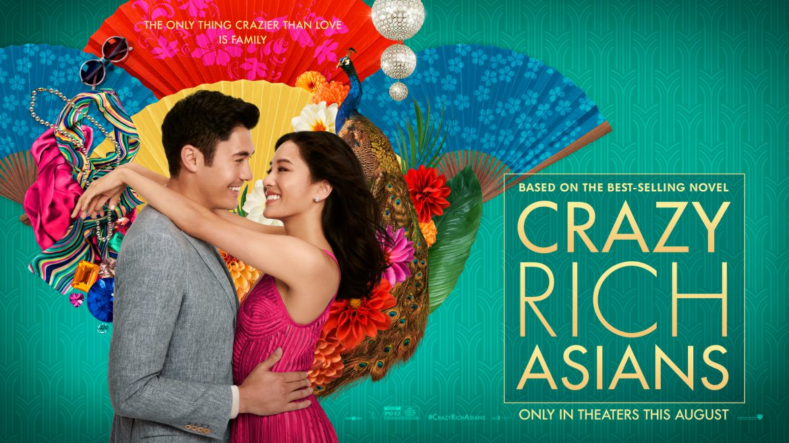

Interesting Facts:
- Mahjong is a popular Chinese game that involves the use of tiles in a game of strategy, memory and skill.
- The longest mahjong marathon lasted 33 hours. The record was set on December 16, 2012 by Oleg Pretov, Anton Khantimirov, Nickolay Demyanov, and Mark Efremov in Russia.
- There is a rare condition people can get where they have epileptic seizures while playing or watching mahjong. In 2007 23 people reported having seizures while playing.
- Abercrombie and Fitch were the first company to sell majhong sets in the US. Asia didn't believe there was a market for it so when Abercrombie and Fitch noticed there was no where to buy them they capitalized.
- The red dragon tile means passing examination, the green dragon means wealth, and the white dragon means freedom.
- Some players believe winning the first round is bad luck.
- Several Hong Kong dinners supply mahjong tables for guests to play while they wait for their food.
- Original tiles were made from bone or ivory
- The worlds most expensive mahjong set costs 1.3 million dollars and is made up of 300 daimonds, 1000 rubies and gold trim.
- A total of up to 144 tiles are typically used in a game of mahjong, featuring depictions of bamboo, circles and characters from numbers one to nine; as well as special symbols from seasons, winds, dragons and flowers.
- The origins of mahjong are quite disputed and it is possible that the Chinese teacher Confucius designed the game around 500 BC; or the Chinese military invented it in the later 1800s; or it simply grew or was created out of other similar styled games.
- Mahjong has previously had a gambling component that resulted in the Chinese government banning the game in China from 1949 to 1985, and the game was later reinstated without that element.
- Mahjong became known to the English-speaking world around 1895, and began being imported in North America in the 1920’s, while the rules of the game were printed in English by various people causing the game to have many variations in the rules.
- The general aim of the game is to score points primarily by ‘wooing’ or forming ‘mahjong’, which is done by achieving a specific set of combinations of tiles by picking them up, while others are discarded.
- The first mahjong World Championships were held in Japan’s Mahjong Museum in 2002, and the competition was won by Mai Hatsune from Japan.
- Generally a game of mahjong is played by four people over a series of rounds, although variants with two, three or even five players, are also played.
Media
Mahjong has been resurfacing lately in the media, as seen by the mahjong moment in Crazy Rich Asians. There was also a long standing manga in Japan called Akagi the covered the daily life of a mahjong expert that just ended. Also, the Yakuza series has taken off in popularity a few years back and with its popularity mahjong has gotten some attention. Yakuza includes mahjong as a minigame in all of its installments, so if a player has played Yakuza they have probably seen mahjong as well.